Introduction

Formula 1 is the highest tier of single-seater motor racing in the world, bringing together twenty of the fastest cars and drivers on the planet across roughly twenty-three races on five continents each year. Ten teams, known as constructors, design and build their own cars from the ground up, competing not only against one another on the track but also in a season-long engineering arms race that plays out in wind tunnels, simulators, and factories long before a single lap is driven. A single Formula 1 weekend blends raw driver skill with split-second strategic decisions, mechanical reliability, and the unpredictable influence of weather, making the outcome of any given race the product of dozens of interacting factors rather than any one alone. The sport traces its roots back to 1950 and has grown from a niche European pursuit into a genuinely global spectacle, watched by hundreds of millions of fans across television, streaming, and in-person attendance at grands prix from Melbourne to Las Vegas. Its cultural footprint has expanded dramatically in recent years, driven in part by broader media coverage that has pulled back the curtain on the strategic and human drama behind the scenes, introducing the sport to entirely new audiences who may know little about the technical rules but are drawn in by the competition and storylines. Beyond entertainment, Formula 1 carries real economic weight, supporting host cities, tourism, sponsorship industries, and a vast supply chain of engineering and manufacturing jobs tied to the sport and its technologies. The sport also matters to motorsport fans, bettors, fantasy competition players, and casual viewers alike, each of whom has a stake in understanding what actually separates a winning race from a losing one. Team principals, engineers, and drivers all rely on an enormous amount of historical performance data to plan strategy, and that same information is increasingly available to the public, opening the door for anyone to explore what truly predicts success on a given Sunday. Fans often debate which factors matter most, whether it is qualifying speed, tyre management, pit crew execution, or car reliability, and these debates rarely settle cleanly because so many variables move together over the course of a race. Understanding these dynamics has value that extends well past the racetrack itself, since the same principles of strategic decision-making under uncertainty, resource allocation, and risk management appear in many other competitive and business contexts.
The people affected by Formula 1 outcomes extend far beyond the drivers themselves, reaching engineers, team owners, sponsors, broadcasters, host cities, and the millions of fans who follow the championship standings from race to race. Teams and their strategists are perhaps the most directly affected group, since a single pit stop call or tyre choice can be the difference between a podium finish and a disappointing result, with direct financial consequences tied to prize money and sponsorship value. Drivers and their personal brands are also shaped heavily by consistent performance, and a driver's market value, contract negotiations, and reputation are all influenced by how well they and their team translate raw pace into race-day results. Host circuits and cities benefit economically from successful, closely contested events, and a season perceived as dull or predictable can affect ticket sales and broadcast interest in future years. Fans, meanwhile, are affected in a more personal way, investing emotional energy into rivalries and championship battles that hinge on the same underlying performance factors being explored here. Journalists, broadcasters, and analysts have long tried to explain race outcomes to the public, generally relying on expert commentary and qualitative storytelling rather than systematic analysis of the underlying historical data. Motorsport organizations and official data providers have released increasingly detailed historical records in recent years, including lap times, pit stop timing, tyre compound choices, and weather conditions, which has opened the door for far more rigorous, evidence-based analysis than was possible in earlier decades. Academic and hobbyist analysts have already begun exploring pieces of this puzzle, publishing work on topics such as the historical value of pole position, the timing windows that tend to produce successful pit stops, and how much of a driver's success can be attributed to the car versus the individual behind the wheel. Much of this existing work tends to focus narrowly on a single factor in isolation, such as grid position alone, rather than considering how starting position, tyre strategy, pit stop execution, constructor strength, and weather conditions interact together across a race. There remains substantial room to bring these threads together using real historical race records spanning multiple seasons, applying a more complete and structured exploration of how these factors relate to final race outcomes. This project sits within that broader effort, using publicly available historical Formula 1 data to examine race and strategy factors in a systematic way, with the aim of building a clearer, evidence-based picture of what actually separates strong results from weak ones across a broad set of real races.
Research Questions
- How strongly does starting grid position predict final race finishing position across different circuits and seasons?
- Do certain constructors consistently convert strong qualifying positions into strong race results more effectively than others?
- How does the number of pit stops a driver makes during a race relate to their final finishing position?
- Are there identifiable patterns in the timing of pit stops, such as early versus late strategy calls, that relate to better outcomes?
- How do tyre compound choices and the length of tyre stints relate to a driver's pace and final result?
- Do wetter or hotter race conditions change which factors matter most in determining race outcomes?
- Is there a meaningful difference between how much grid position matters at high-speed circuits versus tighter, more technical circuits?
- How consistent is the relationship between constructor strength and driver finishing position across multiple seasons?
- Do drivers who lose positions at the start of a race tend to recover them by the finish, or does an early setback tend to compound over the course of a race?
- Which combination of factors, such as grid position, pit stop count, and constructor, appears to explain the largest share of variation in final race outcomes?
Data Preparation & Exploratory Data Analysis
Where the data came from
Real data only All records below are real, publicly documented Formula 1 results — no simulated or synthetic values were generated at any point.
Data was pulled directly from two official, freely accessible sources covering the 2021, 2022, and 2023 seasons (66 races total):
- Jolpica-F1 API (the maintained successor to the Ergast API) — api.jolpi.ca/ergast/f1. Used for race results (grid position, finishing position, points, status, constructor), qualifying results, and pit stop records (lap number and duration of every stop), pulled programmatically with pagination to retrieve full-season data.
- FastF1 Python library — pulls official F1 live-timing data. Used for tyre compound / stint information and race-weather summaries (air temperature, track temperature, humidity, rainfall) for a subset of 38 of the 66 races (the remaining races were not pulled due to the public timing API's hourly rate limit, and are left blank rather than filled with invented values).
All raw pulls and the fetch scripts that produced them are included in this repository:
- combined_raw_snapshot.csv — the merged results + qualifying + pit stop + tyre/weather data, exactly as pulled, before any cleaning (1,320 driver-race rows).
- data/raw_pulls/ — every individual raw JSON response pulled from the APIs (per-season results, qualifying, pit stops, and per-race FastF1 tyre/weather summaries) before any merging or cleaning.
- fetch_jolpica.py, fetch_pitstops.py, fetch_fastf1.py — the data-pull scripts.
- build_dataset.py — the full cleaning and merge pipeline, with every step documented inline.
- f1_driver_race_cleaned.csv — the final cleaned dataset (1,320 rows × 31 columns).
- cleaning_log.txt — a plain-text, step-by-step log of every cleaning decision made.
Raw data (before cleaning)

Cleaned data (after cleaning)

Cleaning steps performed
No missing, incorrect, or unresolved outlier values remain in the final dataset except where a value is genuinely undefined (for example, an average pit stop duration cannot exist for a driver who made zero stops) — those cases are explicitly flagged with a companion boolean column rather than silently dropped or filled with a guess. The full step-by-step log:
Exploratory visualizations
Twelve real, labeled visualizations built directly from the cleaned dataset explore how grid position, tyre strategy, pit stop timing, constructor, and weather relate to race outcomes across the 2021–2023 seasons.
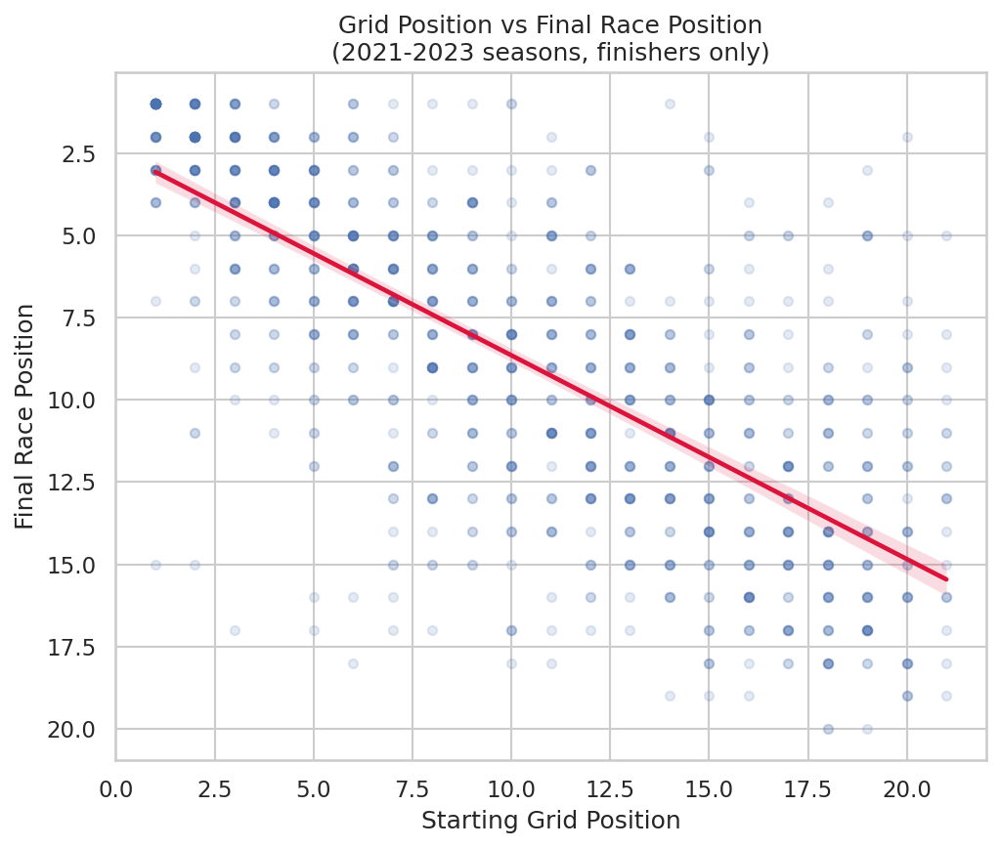
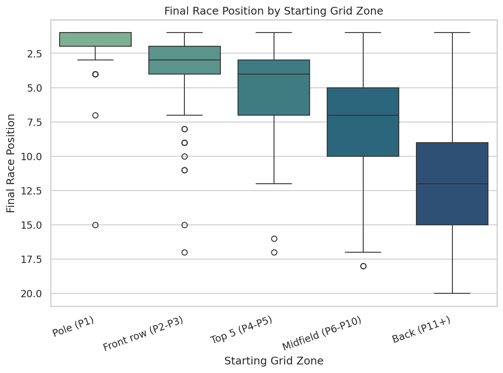
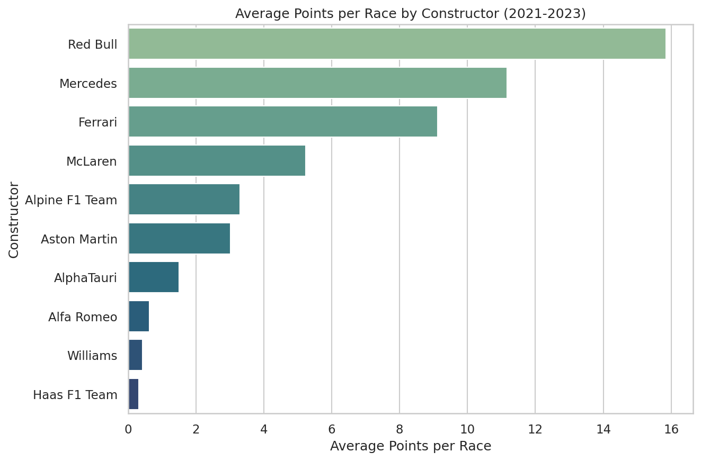
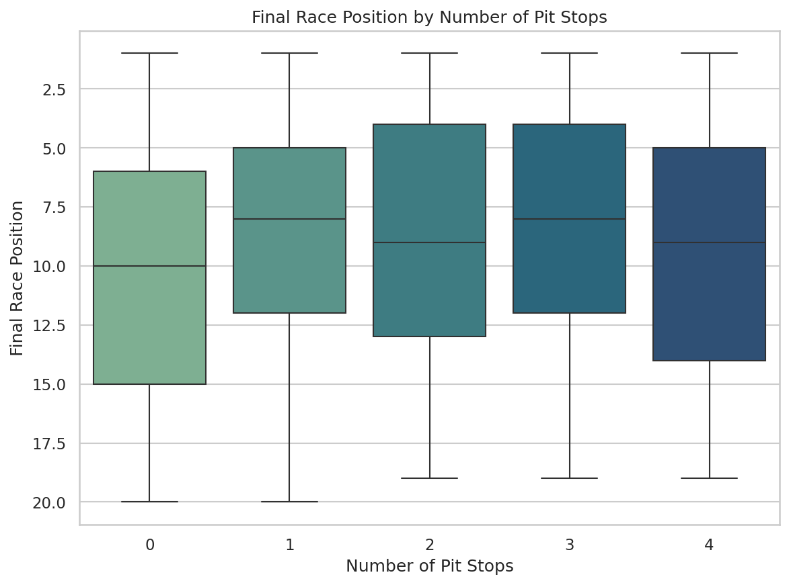
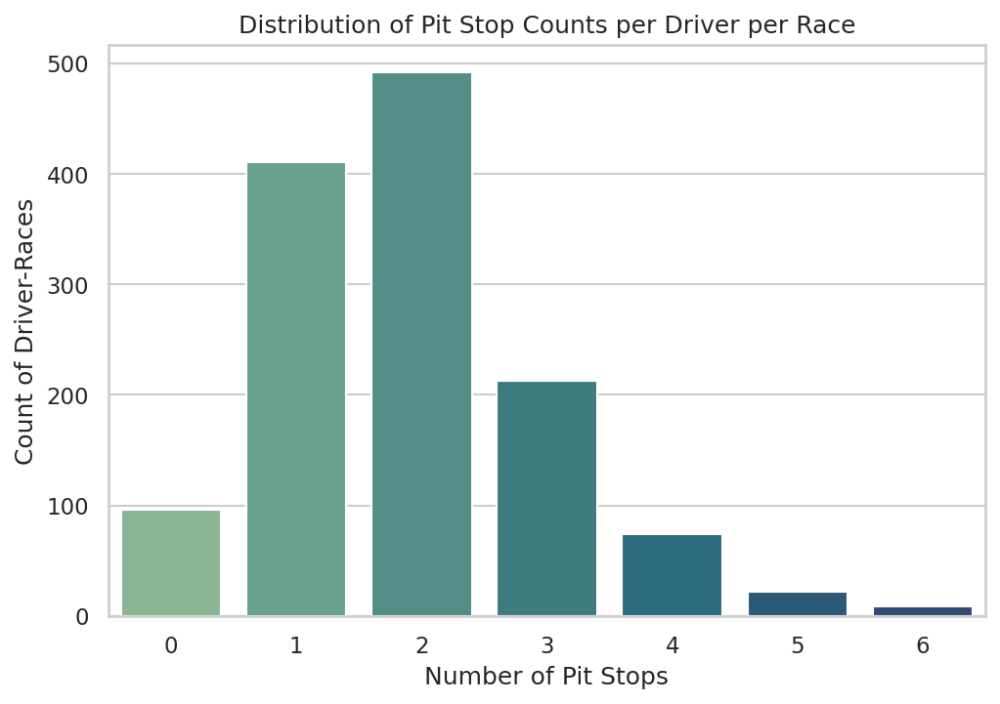
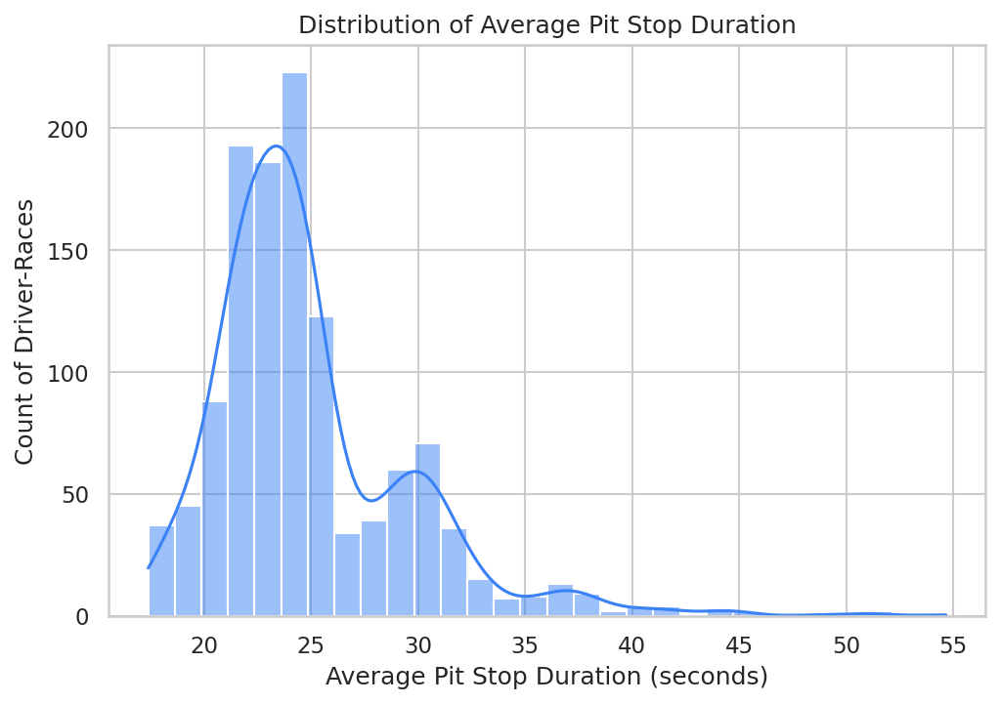
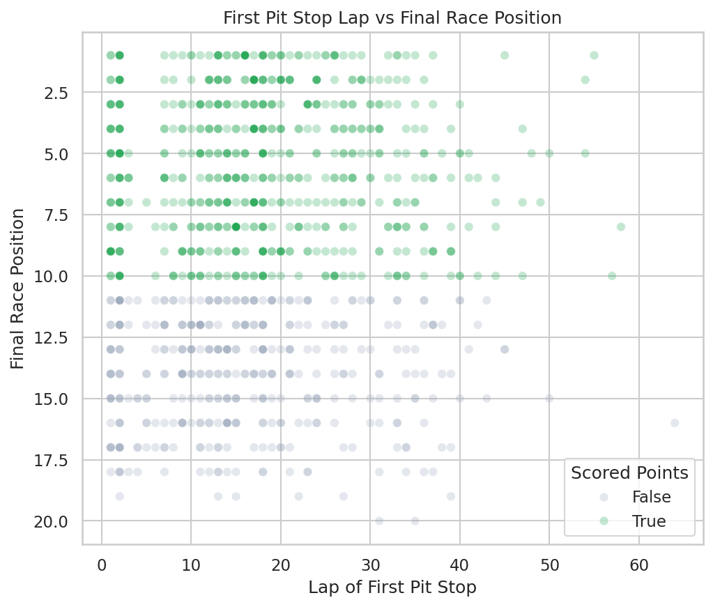
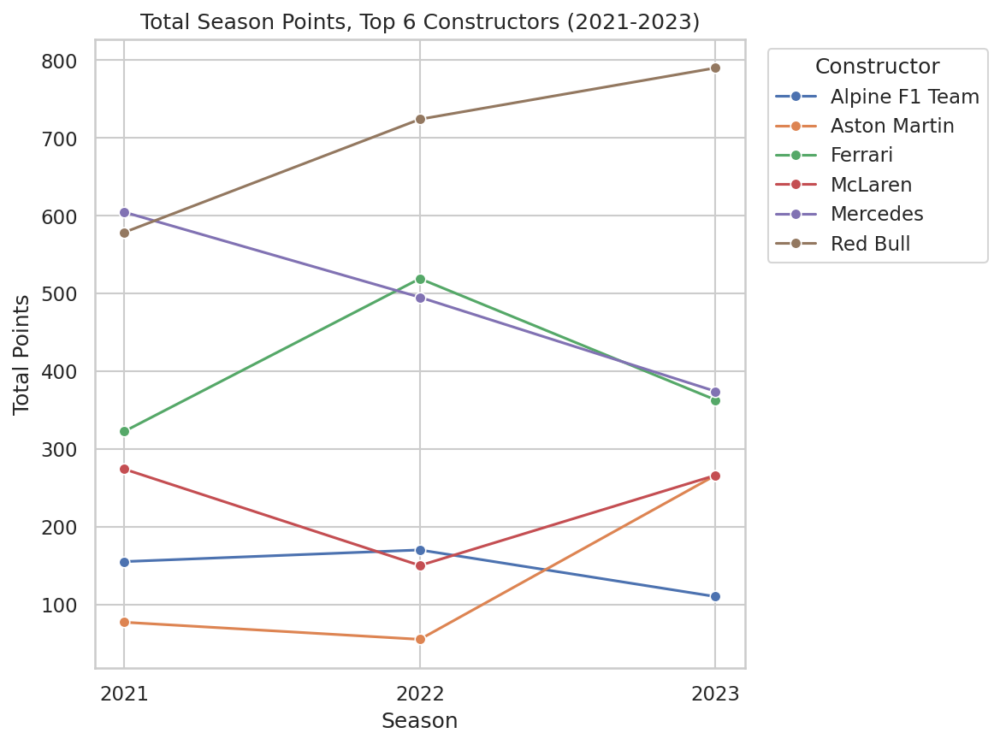
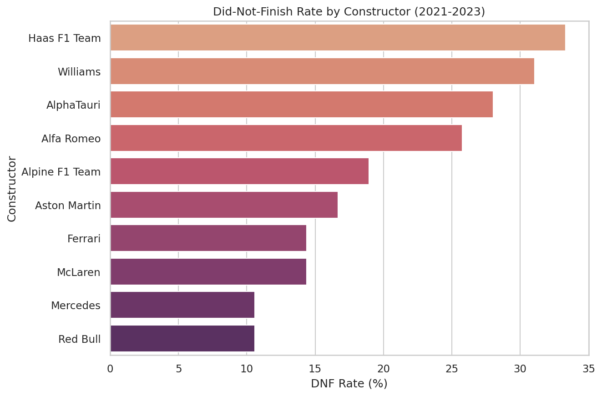
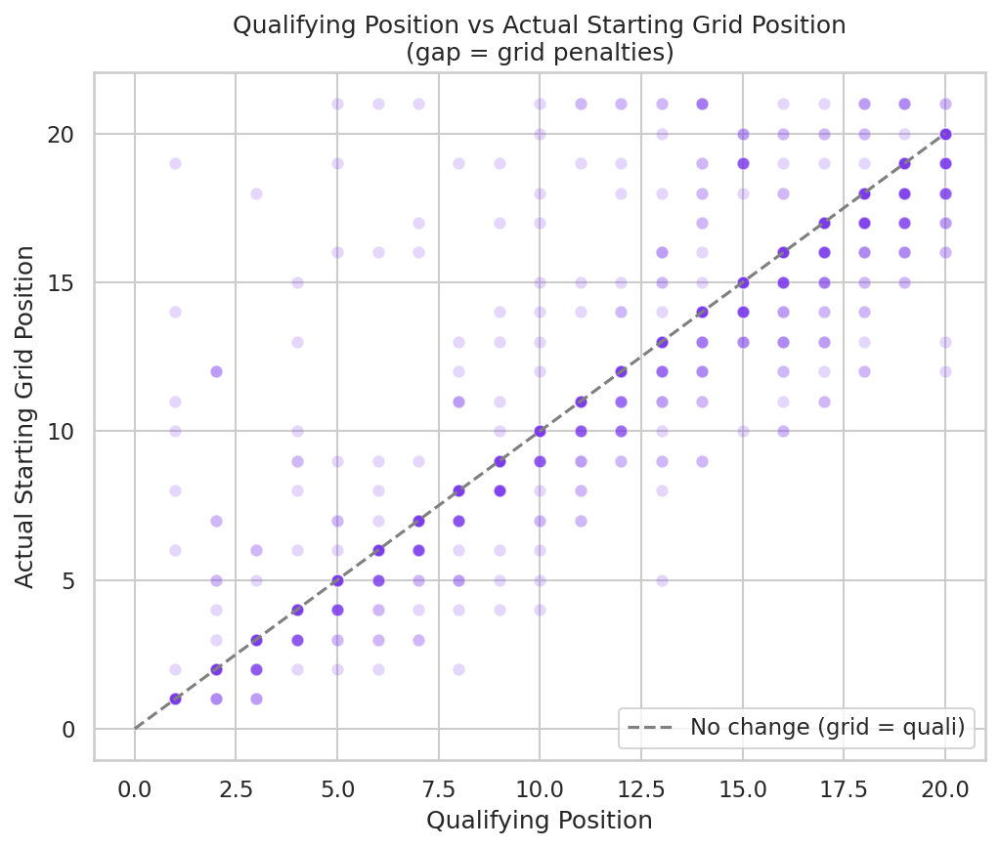
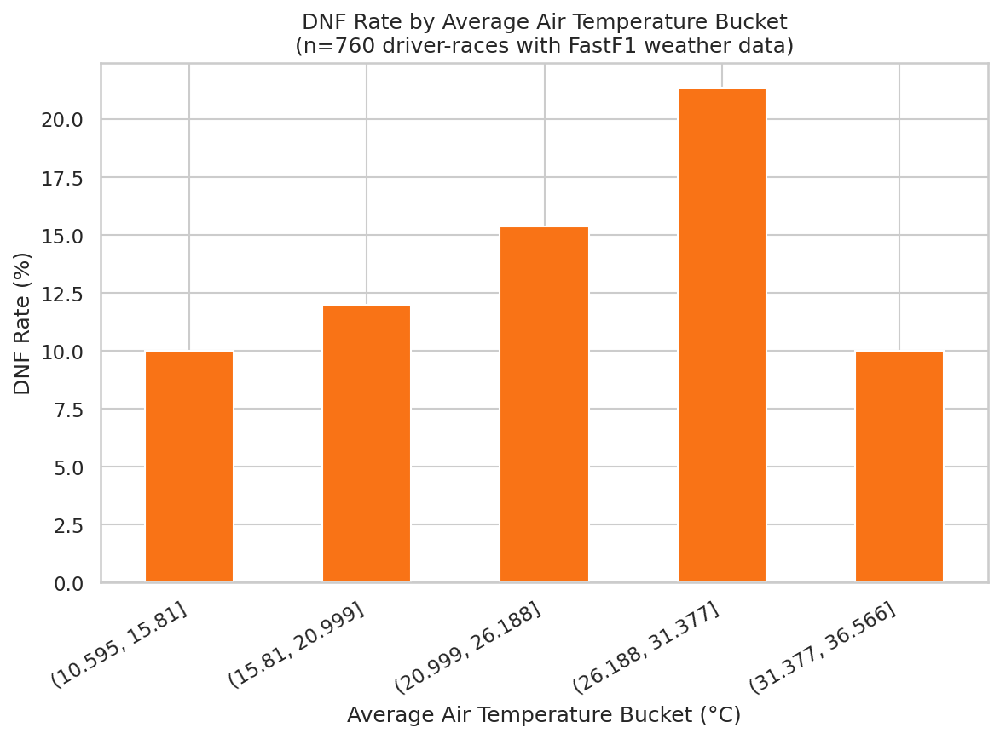
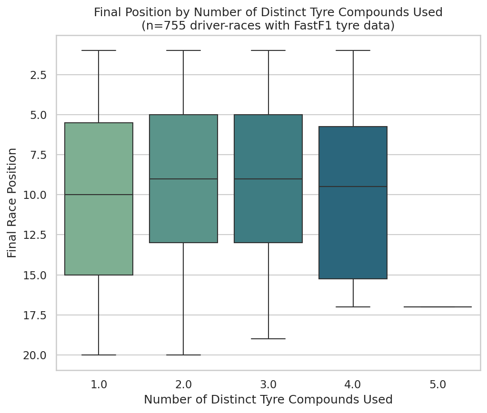
Clustering
Content for this section will be added in a later module.
PCA
Content for this section will be added in a later module.
Naive Bayes
Content for this section will be added in a later module.
Decision Trees
Content for this section will be added in a later module.
SVMs
Content for this section will be added in a later module.
Regression
Content for this section will be added in a later module.
Neural Networks
Content for this section will be added in a later module.
Conclusions
Content for this section will be added in a later module.